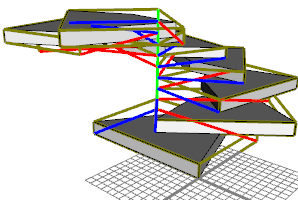
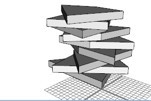

r operation
r(xAngle, yAngle, zAngle)
r(center, xAngle, yAngle, zAngle)
xAngle, yAngle, zAngle float Angles in degrees to rotate about each axis.
center selector
| scopeOrigin | Default. Rotates around the scope origin (scope.t). |
| scopeCenter | Rotates around the scope center. |
The r operation rotates the current shape around the pivot axes in xyz order (it adds the given angles to scope.r). If the rotation center is scopeCenter, it also updates scope.t to keep the center fixed.
Note: r(x, y, z) is the same as rotate(rel, pivot, x, y, z).
Related
Examples
Rotation Centers

height = 18
dy = 2
Lot-->
extrude(height)
split(y) {
dy : r(0, 360*split.index/split.total, 0)
X.
}*
In this example, a mass model is split in vertical direction and the slices are rotated around the scope.t. Each slice's scope is shown, note how the y-axes denote an axis of symmetry.

height = 18
dy = 2
Lot-->
extrude(height)
split(y) {
dy : r(scopeCenter, 0, 360*split.index/split.total, 0)
X.
}*
The same example as above, but this time the rotations are around the scope center.